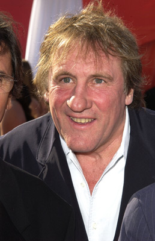
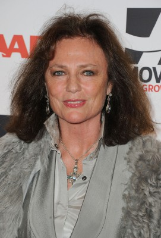
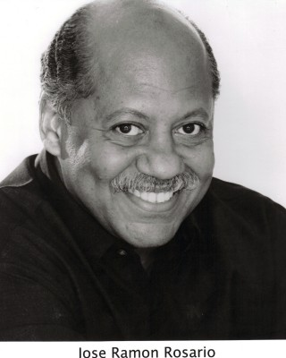
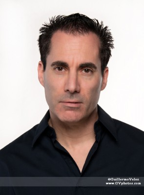
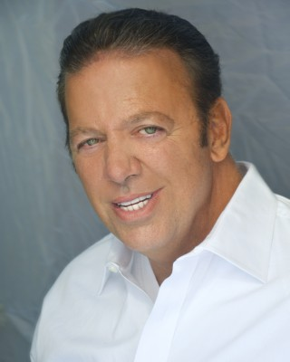

#585 Welcome to New York

 IMDB-Wertung: 5.4 / 10
IMDB-Wertung: 5.4 / 10  Metascore: 71
Metascore: 71 
Mr. Deveraux ist einer der mächtigsten Männer der Welt. Er jongliert tagtäglich mit Milliarden, beeinflusst das wirtschaftliche Schicksal ganzer Nationen. Deveraux träumte davon, die Welt zu verändern. Doch sein ungezügeltes sexuelles Verlangen wird ihm zum Verhängnis – es lässt ihn in einen internationalen Skandal schlittern, der ihn fast alles kostet: seine Macht, sein Geld, sein Ansehen.
Jahr: 2014
Dauer: 125 Minuten
FSK: 12
Land: USA Studio: IFC FilmsTonspuren:
Untertitel:
Auflösung: 1080p (1920x1080) Größe: 8939 MB
Genre: Drama
Regisseur: Abel Ferrara
Drehbuch: Abel Ferrara, Christ Zois
Soundtrack:
Darsteller:
-  Gérard Depardieu als Devereaux
-  Jacqueline Bisset als Simone
- Marie Mouté als Sophie Devereaux
- Paul Calderon als Pierre
- Paul Hipp als Guy
- Shanyn Leigh als Female Journalist
 Amy Ferguson als Renee
Amy Ferguson als Renee Ronald Guttman als Roullot
Ronald Guttman als Roullot- JD Taylor als Josh
-  José Ramón Rosario als Detective Rosario
- Pascal Yen-Pfister als Hotel Security Chief
- Brett G. Smith als SVU Detective
- Tania Santiago als Housekeeper
- Stephen Reich als Male Assistant DA
- Nikki James als Judge
- James Heaphy als Detective Fitzgerald
- Norm Golden als George
- Joe Lawless als Benjamin
- Brian McCabe als Port Authority Detective
- Samantha Opitz als Hotel Receptionist
- Aurelie Claudel als Air France VIP Escort
- Ilinca Kiss als Concierge
- Anna Lakomy als Anna
- Raquel Nave als Russian Desiree
- Natasha Romanova als Russian Yelena
- Drena De Niro als Executive Assistant
- Anh Duong als Livia
- Lee Godart als Airport Security Representative
- Nneoma Nkuku als Female Supervisor
- Maria Di Angelis als Stewardess
- José Báez als Man in Restaurant
- Spelman M. Beaubrun als Michel
- John Patrick Barry als Port Authority Chief
- Eddy Challita als French Medic , uncredited
- Faust Checho als Board Member , uncredited
- Christian Frazier als Asst. Security Director , uncredited
-  Jeff Grossman als Corrections Officer , uncredited
- Sebastián Gálvez als Mini Bar Orderly , uncredited
- Lohrasp Kansara als Townhouse Owner , uncredited
- Julito McCullum als Young Man , uncredited
-  John Merolla als Court officer , uncredited
- Gregg Micheals als Restaurant Patron , uncredited
- Kennedy Moronta als Prisoner , uncredited
- Guillaume Rumiel Braun als Driver , uncredited
- Ana Cecilia Stieglitz als Eva , uncredited
- Raquel Toro als Strauss-Kahn Personal Housekeeper , uncredited
- Neil Benezra als Rooftop paparazzi
- Ged Dickersin als Bail Hearing Judge
- Pamela Afesi als Maid
- Chris Zois als Chris
Datei: X:\2014(N-Z)\Welcome to New York (2014, FSK12, 1920x1080).mkv seit 11.03.2015
Festplatte: HD 2013(I-Z)-2014(A-Z)
 Es gibt insgesamt 163 Filme in der Gruppe '2014(N-Z)'
Es gibt insgesamt 163 Filme in der Gruppe '2014(N-Z)'